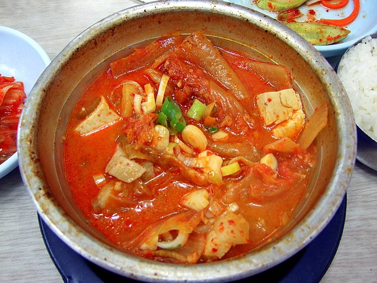

Kimchi Stew
Kimchi Stew or Kimchi-Jjigae

Kimchi-jjigae (김치찌개) or kimchi stew is a jjigae, or stew-like Korean dish, made with kimchi and other ingredients, such as pork or seafood, scallions, onions, and diced dubuor tofu.
Kimchi's flavor as an ingredient becomes stronger and more complex as it ages. As a result, kimchi jjigae is often cooked using older, more fermented, and "riper" kimchi, which has a much more pronounced flavor and contains higher amounts of probiotics. (Living bacteria in fresh, uncooked kimchi will not survive the cooking process.) As kimchi is the core ingredient in kimchi jjigae, other ingredients are dependent on personal preference.
Sliced kimchi is put into a pot with the meat of choice and other typical ingredients such as tofu, sliced spring onions, and garlic. They are stewed in water or anchovy (myeolchi) stock. The stew is seasoned with fermented bean paste (doenjang) or fermented red pepper paste (gochujang).
Ingredients
- 1 tablespoon oil
- 1 onion (thinly sliced)
- 3 cloves garlic (sliced)
- 8 ounces pork belly or shoulder (225g, thinly sliced)
- 1 pound kimchi (450g, wtih juices, chopped)
- 1 teaspon salt
- 2 teaspoons sugar
- 1 tablespoon Korean chili flakes
- 1 tablespoon gochujang (Korean red pepper flakes)
- 3 cups chicken stock 700ml, can substitute fish or beef stock)
- 8 oz. firm tofu (225g, cut into 1/4 inch thick slices)
- 1 teaspoon sesame oil
- 1 scallion (chopped)
Steps
- In a large pot, heat the oil over medium high heat. Add the onion, garlic, and pork belly, and cook for about 5 minutes, until the pork is lightly browned and the onions start to soften.
- Add the kimchi and fry for 2 minutes. Then add the salt, sugar, chili flakes, gochujang, and broth. Stir until combined. Bring to a simmer, cover, and cook for 10 minutes.
- Uncover and lay the tofu over the top. Replace the cover and simmer for another 10 minutes. Uncover for the last time and stir in the sesame oil. Garnish with the chopped scallion and serve immediately with steamed rice!